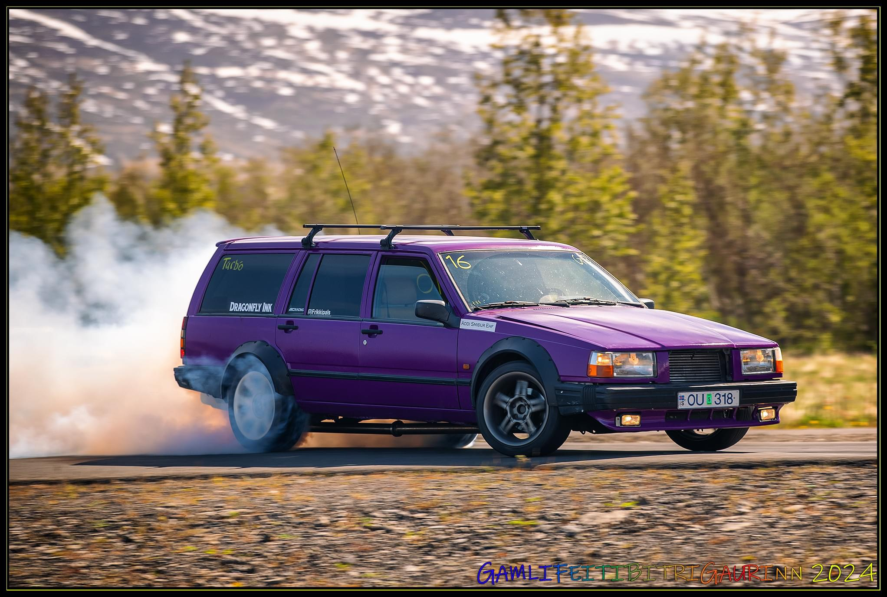

Friðrik.
Áhugamál mín
Helstu áhugamál mín tengjast tækni og bílum sérstaklega
forritun og drift. Ég hef alltaf haft mikinn áhuga á því
að skilja hvernig hlutir virka, bæði í hugbúnaði og vélbúnaði.
Forritun hefur því orðið eitt af mínum stærstu áhugamálum
og ég eyði töluverðum tíma í að læra nýja hluti og prófa
mig áfram með mismunandi verkefni. Ég er ennþá að læra og
þróa mig í forritun, en mér finnst mjög skemmtilegt að vinna
með kóða og búa til hluti frá grunni. Ég hef til dæmis verið
að prófa mig áfram með að búa til einföld forrit, vefsíður og
önnur verkefni þar sem ég get æft mig í að leysa vandamál
og byggja upp lausnir skref fyrir skref.
Til að bæta við þekkingu mína ákvað ég að skrá mig í grunnnám
í forritun hjá NTV skólanum. Markmiðið mitt með því er að fá
betri yfirsýn yfir ákveðna grunnþætti og styrkja undirstöðuna
í forritun. Hins vegar hef ég tekið eftir því að námið snýst
að miklu leyti um HTML og CSS. Þó það sé gagnlegt að kunna það vel,
þá finnst mér þessi hluti vera nokkuð nálægt eða jafnvel undir
þeirri kunnáttu sem ég tel mig nú þegar hafa á því sviði.
Samt sem áður tel ég gott að fara í gegnum þetta efni og
styrkja grunninn, þar sem það getur hjálpað mér að þróast
áfram og byggja ofan á þá þekkingu sem ég hef þegar aflað mér.
Annað stórt áhugamál hjá mér eru bílar og þá sérstaklega drift.
Drift er akstursíþrótt þar sem markmiðið er að stýra bílnum
í stýrðri rennu í gegnum beygjur. Þetta krefst bæði mikillar
stjórnunar á bílnum og góðrar tilfinningar fyrir akstrinum.
Mér finnst mjög gaman að vinna í bílum, læra hvernig þeir
virka og gera breytingar á þeim til að bæta frammistöðu.
Þetta áhugamál tengist líka tæknilegum áhuga mínum almennt,
þar sem ég hef gaman af því að skilja hvernig vélar, kerfi og búnaður virka.
Bæði þessi áhugamál eiga það sameiginlegt að krefjast þolinmæði,
æfingar og stöðugrar læringar. Hvort sem það er að leysa vandamál
í forritun eða að bæta akstur og stillingar á bíl, þá þarf maður
að gefa sér tíma til að læra og þróast. Ég tel að þessi áhugamál
hafi hjálpað mér að þróa með mér góða lausnamiðaða hugsun
og áhuga á því að læra nýja hluti.
Upplýsingar um driftbílinn minn
| Category | Part |
|---|---|
| Car | Volvo 745 |
| Engine | M50b25 Turbo |
| Suspension | BMW E38 Coilovers |

Við hvað starfa ég
Ég starfa á borpalli hjá
Jarðborunum þar sem unnið er
við boranir og ýmis verkefni sem tengjast rekstri og viðhaldi á búnaði
sem notaður er við borverkið. Í starfinu felst að taka þátt í daglegri
vinnu við borinn, fylgjast með búnaði og aðstoða við mismunandi
verkefni sem koma upp í vinnunni. Það er mikil samvinna í starfinu og
allir þurfa að vinna vel saman til að tryggja að vinnan gangi
örugglega og skilvirkt fyrir sig.
Ég byrjaði í þessu starfi árið 2025 og hef síðan þá lagt mig fram við
að læra sem mest um borverkið og hvernig búnaðurinn virkar. Í vinnunni
vinn ég með fólki sem hefur mikla reynslu og ég fæ oft tækifæri til að
taka þátt í verkefnum sem hjálpa mér að skilja starfið betur. Það er
mikilvægt að fylgja öryggisreglum vel þar sem unnið er með stór og
öflug tæki.
Vinnutíminn minn er þannig að ég vinn í tvær vikur í einu og fæ síðan
tvær vikur í frí. Á vinnutímanum bý ég og vinn á borpallinum ásamt
öðrum starfsmönnum. Þessi vinnutími getur verið krefjandi en hefur
líka þann kost að þegar vinnutörninni lýkur fæ ég lengra frí áður en
ég fer aftur í vinnu.
Mér finnst starfið bæði áhugavert og krefjandi þar sem engir tveir
dagar eru alveg eins og alltaf er eitthvað nýtt að læra. Ég hef haft
áhuga á að læra meira um tæknina og vinnuferlana sem notuð eru við
boranir og reyni alltaf að bæta þekkingu mína í starfinu.